Digital Twin Exchange - Visual Inspection Lab
Note
Please follow the Action statements to navigate the steps and perform the lab. If you scroll in on the images, they are easier to see.
The sedimentation tanks needs to be constantly monitored for growth of fungi or other unwanted debris. The operator uses Maximo Visual Inspection to inspect the tanks. The cameras will be posted around the tanks for 24 hours a day, saving the operator time from checking the tanks every hour.
I am a Asset Analyst at the facility and have been tasked to develop models that can identify dirty tanks. The developed models need to be highly accurate as they will be integrated into our Asset management solution using IBM Maximo.
Action: Access Maximo Visual Inspection from the console. Launch Maximo Visual Inspection from the suite’s navigator
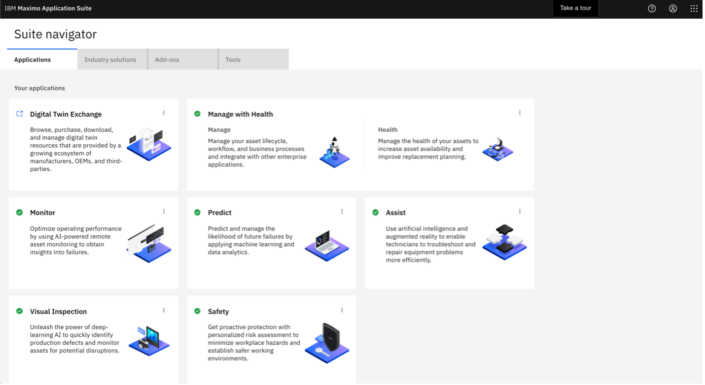
Create Dataset
The Asset Analyst must create a dataset to aggregate images of the tank and label the data that represents dirty and clean tanks.
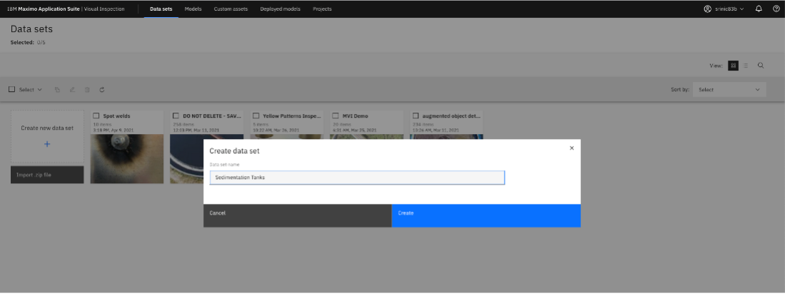
Action: Create a dataset from these sample images on this box link.
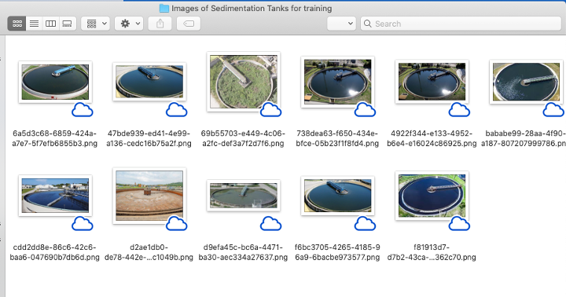
Action: Drag and drop images of dirty and clean tanks into the dataset.
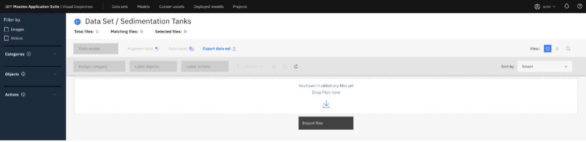
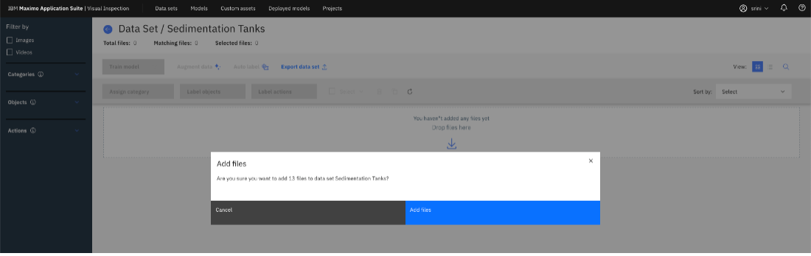
A loaded dataset will look like the following:
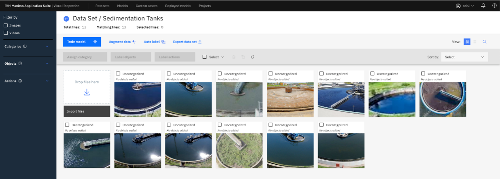
Action: Select all Images and click Label Objects
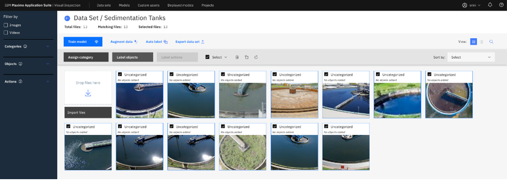
Action: Create labels. Click Add label and create two labels (clean and dirty).

Annotate images with portions that denotes a clean tank.
Action: Select clean, select Box and draw a box around portion of the image that denotes a clean tank
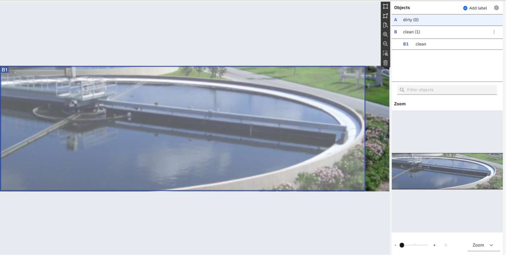
Repeat labeling all the images with “clean” tanks.
Now label all the images with dirty tanks.
Action: Select dirty, select Box and draw a box around portion of the image that denotes a dirty tank
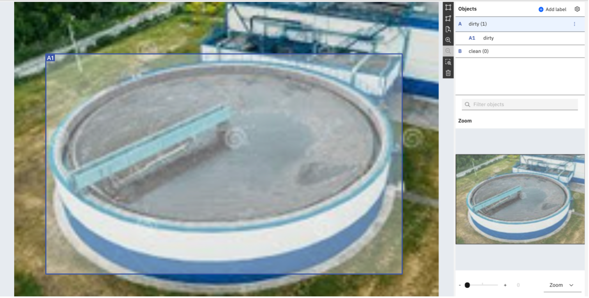
You have now labeled 13 images (8 clean and 5 dirty). To train deep learning models of high accuracies, a dataset should have a variety and volume of images. MVI offers an ability to augment initial images by applying several filters.
Action: Select all the images and click “Augment Data”
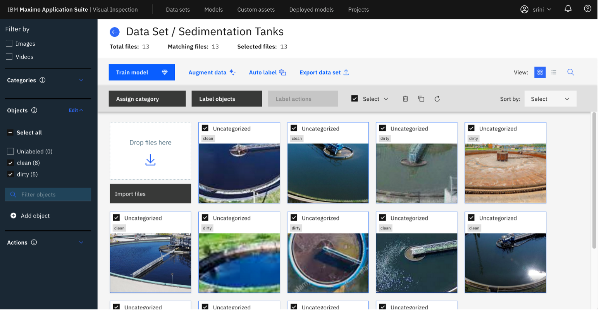
Action: Select filters to Sharpen, Crop, Rotate, Vertical & Horizontal flips to generate 221 additional images. Label the new dataset Augmented Sedimentation Tanks.
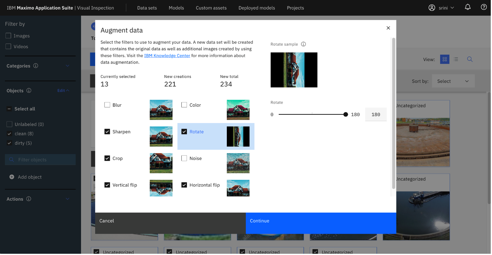 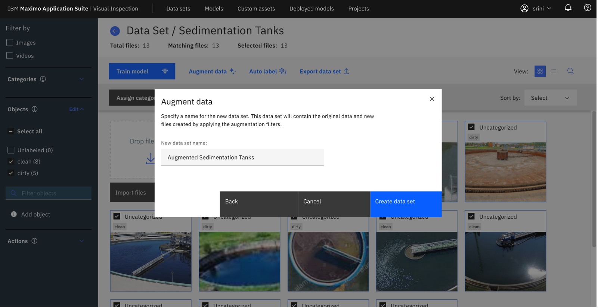
This feature lowers the cost of data acquisition and labelling for Asset Analysts.
Note
The annotations are also inherited on the augmented images
Navigate to the new dataset and identify the 234 images, 144 labeled images with clean tanks and 90 images with dirty tanks.
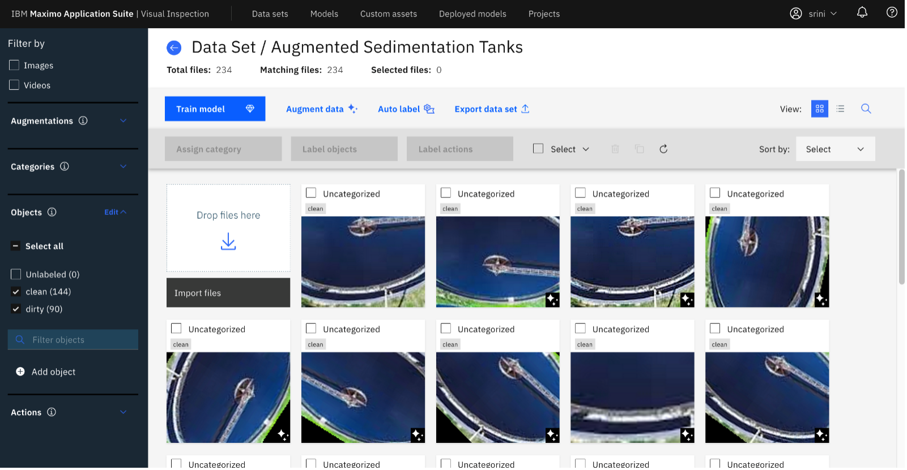
Train Models
Action: Click the button labeled Train Model. Select Object detection, make sure Faster R-CNN is selected. MVI offers several types of models required to address a use case.
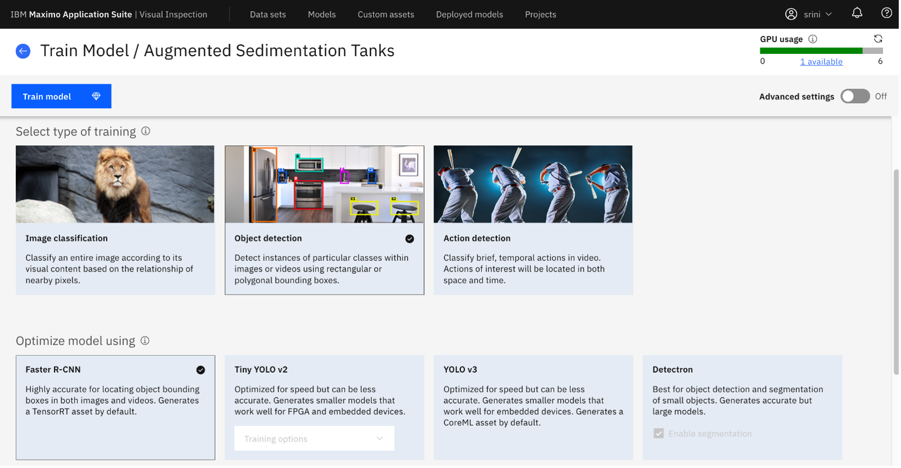
Note
- If you click the button to “Train model”, it would take 30 minutes to complete the training. For the demo, show the pretrained model ALREADY in the demo system, or available on the Digital Twin exchange here
As an Asset Analyst, I can view the characteristics of the trained model.
Action: Click the trained model to view model metrics like Accuracy, mAP, Precision, Recall, IoU, Loss graphs and Confusion martix.
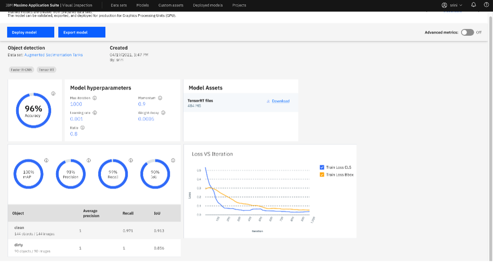
Action: Click button to Deploy model
Validate the deployed model.
Action: Click the model from the deployment page.
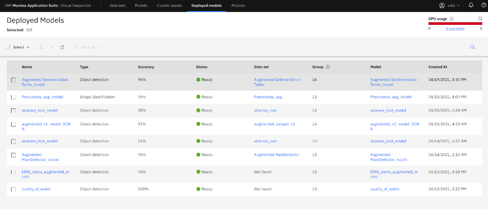
Access the validation images on the box folder at this box link.
Action: Drag and drop images to validate.
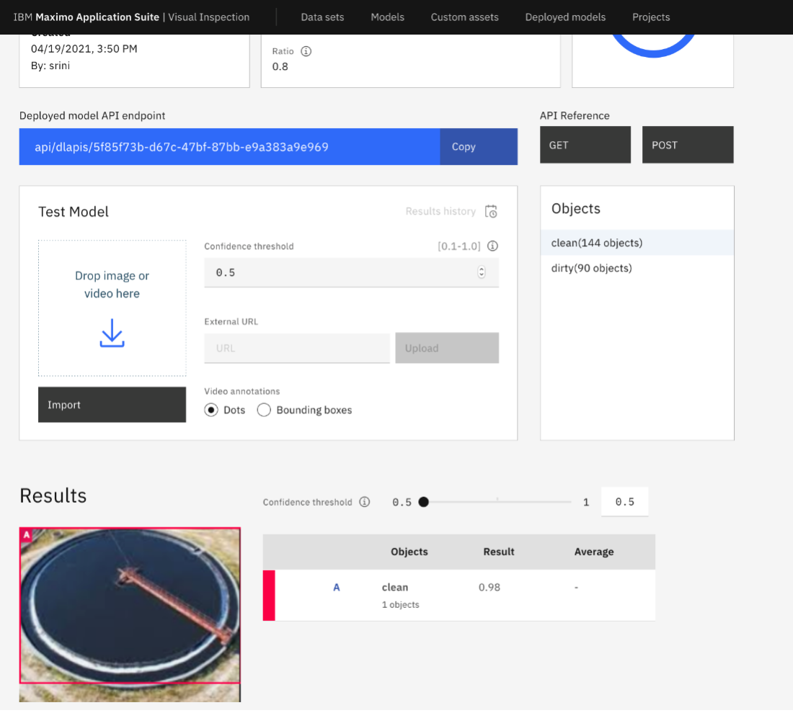
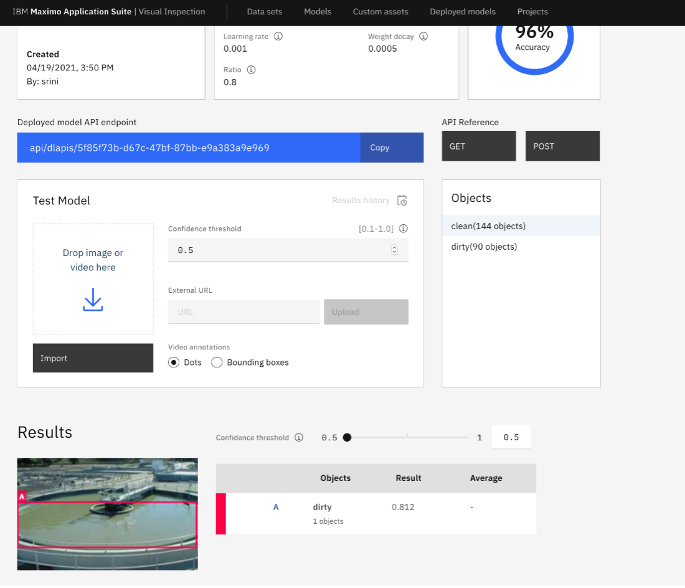
With validated model, you can build a dashboard in Maximo Monitor that will display the results of the tank inspections, from live camera feeds, as demonstrated in the Monitor section above.
TRANSITION: Now, I’m going to turn it over to the Asset Manager who uses artifacts in Digital Twin Exchange to set up data model and asset in MAS applications